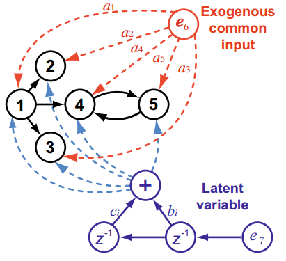
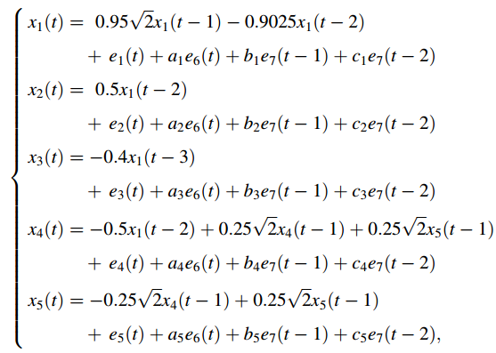

GUO ET AL. (2008) - 5-dimension VAR[3] with large common exogenous input
Guo, Wu, Ding & Feng. Uncovering interactions in frequency domains. PLoS Computational Biology, 4(5):1-10, February 8, 2008. https://dx.plos.org/10.1371/journal.pcbi.1000087
Page 2 Toy Model Example 5-dimension VAR[3] with large common exogenous input
Contents
- See also: mvar, mvarresidue, asymp_pdc, asymp_dtf, gct_alg,
- Interaction diagram
- Equation system
- Data sample generation
- MVAR model estimation
- Granger causality test (GCT) and instantaneous GCT
- Original PDC estimation
 Matrix Layout Plotting
Matrix Layout Plotting- Result from Figure 1 (bottom) Guo et al.(2006)
- Information PDC estimation
- iPDC Matrix Layout Plotting
- Original DTF estimation
- DTF Matrix Layout Plotting
- PDC p-values matrix layout plots
- Concluding remarks
See also: mvar, mvarresidue, asymp_pdc, asymp_dtf, gct_alg,
igct_alg, xplot, xplot_pvalues
% (C) Koichi Sameshima & Luiz A. Baccalá, 2022. % See file license.txt in installation directory for licensing terms. clear; clc; format compact; format short
Interaction diagram

Equation system

Data sample generation
nDiscard = 50000; % number of points discarded at beginning of simulation nPoints = 10000; % number of analyzed samples points u = fguo2008_linear(nPoints, nDiscard); chLabels = []; % or = {'x_1';'x_2';'x_3';'x_4';'x_5'}; fs = 1; alpha = 0.0001;
====================================================================================================
Five dimensional linear VAR[3] Model
with large common exogenous input
Guo et al. February 8, 2008.
x1==>x2 x1-->x3 x1==>x4 x4-->x5 x5-->x4
Instantaneous causality in between all variables.
====================================================================================================
Assigned "sum(100*clock)" initial state.2
Model parameters:
a1=0.157613; a2=0.970593; a3=0.957167; a4=0.485376; a5=0.800280;
b1 = b2 = b3 = b4 = b5 = 2;
c1 = c2 = c3 = c4 = c5 = 5;
====================================================================================================
Data pre-processing: detrending and standardization options
flgDetrend = 1; % Detrending the data set flgStandardize = 0; % No standardization [nChannels,nSegLength] =size(u); if nChannels > nSegLength u = u.'; [nChannels,nSegLength]=size(u); end if flgDetrend for i=1:nChannels, u(i,:)=detrend(u(i,:)); end disp('Time series were detrended.'); end if flgStandardize for i=1:nChannels, u(i,:)=u(i,:)/std(u(i,:)); end disp('Time series were scale-standardized.'); end
Time series were detrended.
MVAR model estimation
maxIP = 30; % maximum model order to consider. alg = 1; % 1: Nutall-Strand MVAR estimation algorithm criterion = 1; % 1: AIC, Akaike Information Criteria disp('Running MVAR estimation routine.') [IP,pf,A,pb,B,ef,eb,vaic,Vaicv] = mvar(u,maxIP,alg,criterion); disp(['Number of channels = ' int2str(nChannels) ' with ' ... int2str(nSegLength) ' data points; MAR model order = ' int2str(IP) '.']);
Running MVAR estimation routine. maxOrder limited to 30 IP=1 vaic=525852.365890 IP=2 vaic=513774.092200 IP=3 vaic=512805.122565 IP=4 vaic=512836.705405 Number of channels = 5 with 10000 data points; MAR model order = 3.
Testing for adequacy of MAR model fitting through Portmanteau test
h = 20; % testing lag MVARadequacy_signif = 0.05; % VAR model estimation adequacy significance % level aValueMVAR = 1 - MVARadequacy_signif; % Confidence value for the testing flgPrintResults = 1; [Pass,Portmanteau,st,ths] = mvarresidue(ef,nSegLength,IP,aValueMVAR,h,... flgPrintResults);
====================================================================================================
MVAR RESIDURES TEST FOR WHITENESS
----------------------------------------------------------------------------------------------------
Good MAR model fitting! Residues white noise hypothesis NOT rejected.
Pass = 0.04
st = 469.564
Granger causality test (GCT) and instantaneous GCT
gct_signif = alpha; % Granger causality test significance level igct_signif = alpha; % Instantaneous GCT significance level flgPrintResults = 1; [Tr_gct, pValue_gct] = gct_alg(u,A,pf, gct_signif,flgPrintResults); [Tr_igct, pValue_igct] = igct_alg(u,A,pf,igct_signif,flgPrintResults);
====================================================================================================
GRANGER CAUSALITY TEST
----------------------------------------------------------------------------------------------------
Connectivity matrix:
NaN 0 0 0 0
1 NaN 0 0 0
1 0 NaN 0 0
1 0 0 NaN 1
1 0 0 1 NaN
Granger causality test p-values:
NaN 0.3463 0.0017 0.7884 0.1883
0 NaN 0.0015 0.7448 0.4241
0 0.5597 NaN 0.8726 0.2213
0 0.3104 0.0029 NaN 0
0.0000 0.5697 0.0005 0.0000 NaN
====================================================================================================
INSTANTANEOUS GRANGER CAUSALITY TEST
----------------------------------------------------------------------------------------------------
Instantaneous connectivity matrix:
NaN 1 1 1 1
1 NaN 1 1 1
1 1 NaN 1 1
1 1 1 NaN 1
1 1 1 1 NaN
Instantaneous Granger Causality test p-values:
NaN 0 0 0 0
0 NaN 0 0 0
0 0 NaN 0 0
0 0 0 NaN 0
0 0 0 0 NaN
>>>> There are 10 pairs of channels with
significant Instantaneous Granger Causality.
====================================================================================================
Original PDC estimation
PDC analysis results are saved in c structure. See asymp_dtf.m or issue >> help asymp_pdc command for more detail.
nFreqs = 128; metric = 'euc'; % euc = original PDC or DTF; % diag = generalized PDC (gPDC) or DC; % info = information PDC (iPDC) or iDTF. c = asymp_pdc(u,A,pf,nFreqs,metric,alpha); % Estimate PDC and asymptotic statistics
Matrix Layout Plotting
flgPrinting = [1 1 1 2 0 0 1]; % overriding default setting flgColor = 1; w_max = fs/2; strID = 'Guo et al.(2008) Linear model with large common exogenous inputs'; [h1,~, ~] = xplot(strID,c,flgPrinting,fs,w_max,chLabels,flgColor); xplot_title(alpha,metric,'pdc',strID);

Result from Figure 1 (bottom) Guo et al.(2006)
Figure 1, page 2.

Guo et al. (2006) argued that PDC was not able to correctly estimate the right connectivity pattern as their partial Granger causality (PGC) was (see top half of figure above).
However the PDC estimates shown on bottom of Figure 1 are completely wrong, as easily one can perceive by simple one-to-one comparison. It is easy to see that the PDC estimates are very similar to PGC results.
Information PDC estimation
PDC analysis results are saved in c structure. See asymp_dtf.m or issue >> help asymp_dtf command for more detail.
metric = 'info'; c = asymp_pdc(u,A,pf,nFreqs,metric,alpha); % Estimate PDC and asymptotic statistics c.Tragct = Tr_gct; c.pvaluesgct = pValue_gct;
iPDC Matrix Layout Plotting
flgScale = 2; flgMax= 'TCI'; flgSignifColor = 2; strID = 'Guo et al.(2008) Linear model with large common exogenous inputs'; [h2,~, ~] = xplot(strID,c,flgPrinting,fs,w_max,chLabels, ... flgColor,flgScale,flgMax,flgSignifColor); xplot_title(alpha,metric,'pdc',strID);

Original DTF estimation
DTF analysis results are saved in e structure. See asymp_dtf.m or issue >> help asymp_dtf command for more detail.
nFreqs = 128; metric = 'euc'; e = asymp_dtf(u,A,pf,nFreqs,metric,alpha); % Estimate DTF and asymptotic statistics
DTF Matrix Layout Plotting
w_max=fs/2; strID = 'Guo et al.(2008) Linear model with large common exogenous inputs'; [h3,~,~] = xplot(strID,e,flgPrinting,fs,w_max,chLabels,flgColor); xplot_title(alpha,metric,'dtf',strID);

PDC p-values matrix layout plots
flgPrinting = [1 1 1 2 3 0 0]; flgScale = 2; [h4,~, ~] = xplot_pvalues(strID,c,flgPrinting,fs,w_max,chLabels, ... flgColor,flgScale); xplot_title(alpha,metric,['p-value_{iPDC}'],strID);

Concluding remarks
- Guo et al. (2008)''s five-dimension VAR[3] process with large common exogenous inputs, a modified version of an example from Baccala & Sameshima (2001). The exogenous inputs introduce large common variance noise that overpowers the magnitude of directed interactions. As you may have noticed, there are significant instantaneous Granger causality in between all pair of variables. Due to large common exogenous white noise probably one may see false-positive and false-negative connectivities in some simulations, which will also depend on your choice of alpha.
- The PDC and gPDC figures do not resemble PDC plot in Fig.1 of Guo et al. (2008). Our best guess is that Guo & colleagues have used an incorrect PDC estimator. Actually you may notice that the PDC and gPDC estimates are very similar to the PGC by Guo et al (2008).
- In all three PDC formulations, the significant PDC frequency range is similar. iPDC gives a measure that resemble size effect, which is very small in this case. Even so iPDC is significant on the same frequency range as PDC and gPDC.
% * In conclusion: the statement by Guo and collaborators (2008) that PDC can % not uncover the connectivity pattern in large common noise does not hold i.e. % *they are wrong*. For nonlinear systems, in some cases PDC and other linear % methods can uncover correct connectivity pattern, but in other models PDC and % GCT will simply fail. % % %This completes Guo et al. (2008) example. ;